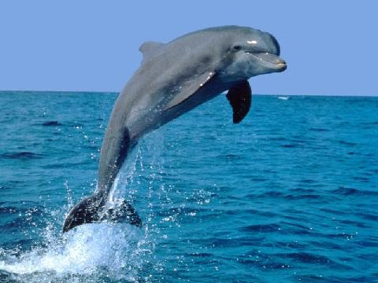
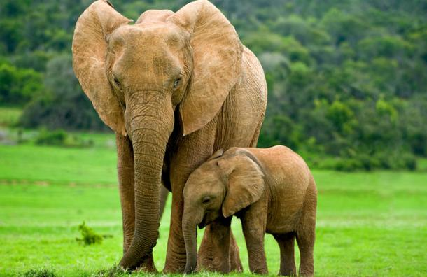
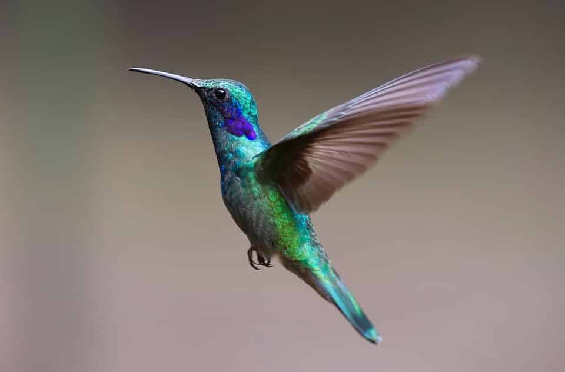

los animales
Un animal es un ser vivo que puede moverse por sus propios medios. Por lo general, dentro de la denominación
se incluye a los integrantes del reino conocido como Animalia. ... Los animales ingieren sus alimentos,
desarrollan una reproducción de tipo sexual o asexual y absorben oxígeno a través de la respiración.
tipos de animales


